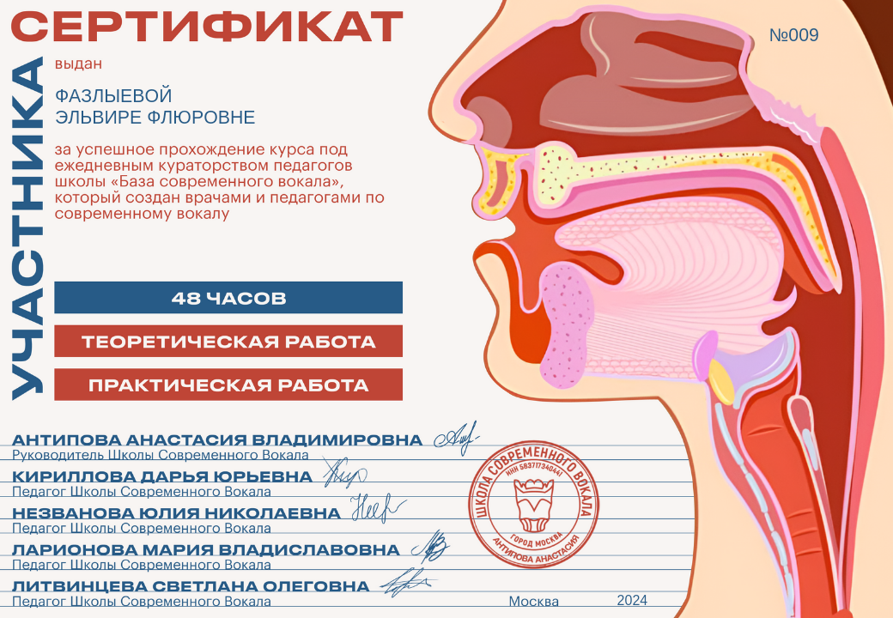

Образование
Постоянно совершенствую свои знания и навыки
2026
Диплом о профессиональной переподготовке
2026
Посмотреть документ

2025
Удостоверение о повышении квалификации
BVT PRO
Посмотреть документ

2024
Удостоверение о повышении квалификации
УЦ им. Н.П. Бехтеревой
Посмотреть документ

2020-2024
Сертификаты о прохождении вокальных курсов
Регулярное повышение квалификации (Гульсанам Садыкова, техники вокала, марафоны Антиповой и др.)
Посмотреть 4 сертификата



2021
Высшее музыкально-педагогическое образование
Направление "Музыкальная терапия", КазГИК
Посмотреть диплом

2011
Диплом о получении премии Президента РФ
Посмотреть диплом